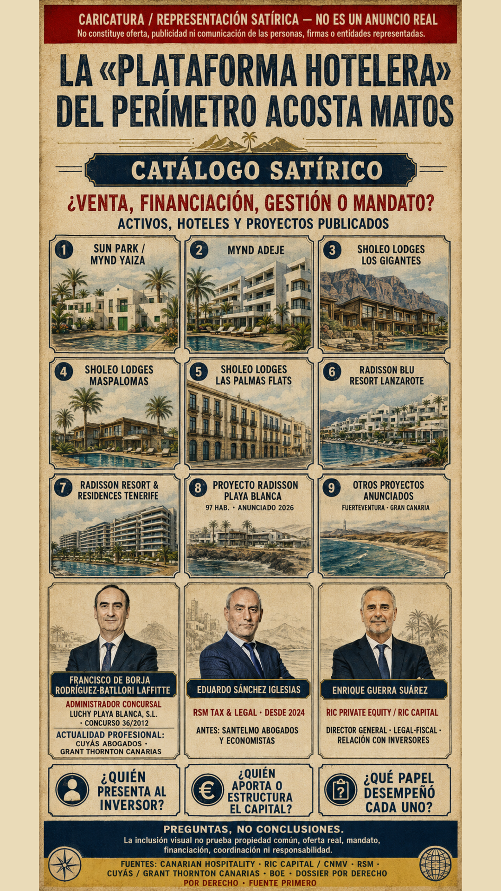
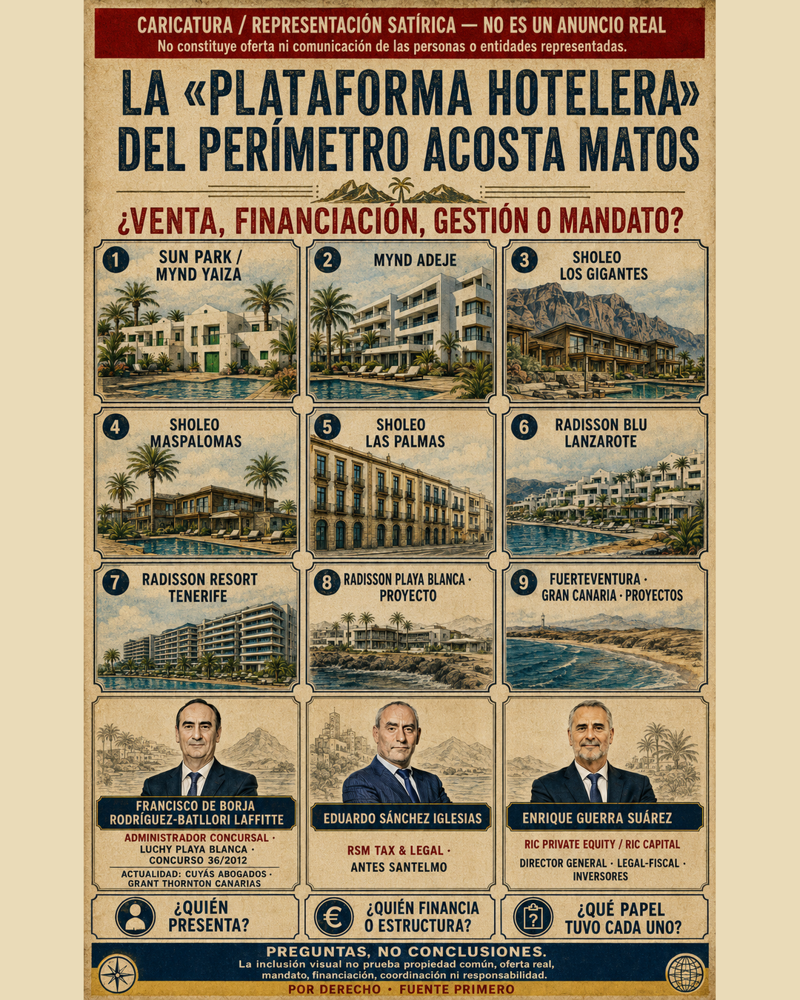

{kind=link}
AUTODESCRIPCIÓN DE LA COMPAÑÍA
12 · 2.500 · +100 M€Canarian Hospitality afirma que pasó de su puesta en marcha y primer hotel en 2021 a 12 hoteles, 2.500 habitaciones y más de 100 M€ en ventas en 2025.
PIEZA VISUAL DE INTERÉS PÚBLICO · PREGUNTAS, NO CONCLUSIONES
El titular llama la atención. La distinción contable y societaria es aún más importante: el volumen comercial de hoteles bajo gestión no es lo mismo que la facturación propia de la sociedad gestora.

AUTODESCRIPCIÓN DE LA COMPAÑÍA
12 · 2.500 · +100 M€Canarian Hospitality afirma que pasó de su puesta en marcha y primer hotel en 2021 a 12 hoteles, 2.500 habitaciones y más de 100 M€ en ventas en 2025.
DECLARACIÓN DEL CEO RECOGIDA POR CINCO DÍAS
44 → ~50 → 60 M€Francisco Fernández declaró una facturación de la propia gestora de 44 M€ en 2024, en torno a 50 M€ en 2025 y una previsión de 60 M€ en 2026.
La cifra de más de 100 M€ se presenta como ventas del conjunto de hoteles bajo gestión. La serie 44/50/60 M€ se presenta como cifra de negocio de la gestora. Sumarlas produciría doble conteo o, como mínimo, una mezcla de perímetros contables distintos. Esta página las mantiene separadas.
El término se usa aquí para representar un ecosistema de relaciones diferenciadas. Cada flecha debe tener fuente y fecha propias.
Título del activo, sociedad propietaria, accionista o coinversor. Una participación de gobierno no se convierte automáticamente en propiedad.
Contrato de gestión, arrendamiento, operación hotelera o prestación de servicios. Gestionar no equivale a poseer.
MYND, Sholeo, Radisson, Marriott u otra marca puede aportar distribución y reputación sin ser propietaria del inmueble.
Equity, deuda, financiación estructurada, suscripción o materialización fiscal deben distinguirse por instrumento y beneficiario.
Diseñar, promover, rehabilitar o construir un hotel es una relación distinta del título y de la explotación.
Un asesor, introductor, autoridad, periodista o medio puede aportar acceso o visibilidad. La asociación no prueba conocimiento ni concierto.
Hoteles operativos, marcas internacionales, profesionales, capital, mandatos y cobertura mediática pueden formar una pila de credibilidad capaz de abrir nuevas puertas. El análisis exige probar cada uso y cada beneficio posterior.
Es una lente analítica y retórica del Proyecto: pregunta si asociaciones positivas pueden ocultar o desplazar una historia controvertida. No se atribuye intención de encubrimiento sin prueba independiente.
Describe la hipótesis de incorporar terceros prestigiosos para tomar prestada su autoridad. La mera aparición de una marca, asesor, inversor o periodista no demuestra conocimiento o participación consciente.
La secuencia a comprobar es: activo o vínculo inicial → credibilidad → acceso → mandato → capital → nuevo activo u oportunidad → beneficio trazable.
La primera acepción es cobertura periodística verificable. La segunda —“dar cobertura”— es una metáfora crítica. No se afirma coordinación mediática sin evidencia específica.
Las entidades y personas aludidas pueden aportar contratos, cuentas, fuentes de fondos, estructuras de propiedad, correcciones o contexto contrario para incorporarlo al registro.
La página conserva únicamente las dos variantes aprobadas. La composición conjunta no convierte gestión, marca, asesoramiento, financiación, cargo profesional o proximidad visual en propiedad, coordinación, conocimiento ni responsabilidad.

Formato 1080 × 1350 para publicación social.
Formato 1080 × 1920 mostrado al inicio de esta página y fijado como adjunto correcto del paquete de correo.
Hoteles y proyectos: la autodescripción y la hoja de ruta pública de Canarian Hospitality sustentan el perímetro comercial representado; cada relación debe leerse según su función y fecha, no como propiedad común.
Francisco de Borja Rodríguez-Batllori Laffitte^ — PD-SP-P-0010: nombramiento como administrador concursal de Luchy Playa Blanca, S.L.U. en el Concurso 36/2012; la web profesional de Cuyás lo incluye actualmente en su equipo y publica una dirección del dominio de Grant Thornton.
Eduardo Sánchez Iglesias^ — PD-SP-P-0161: RSM documentó en julio de 2024 su incorporación, junto al equipo de SanTelmo, al área Tax & Legal.
Enrique Guerra Suárez^ — PD-SP-P-0162: la fuente profesional de RIC Capital y el registro documental del proyecto sostienen su identidad y capacidad publicada; no transfieren a título personal todas las decisiones del perímetro RICPE.
Límite probatorio: esta página no afirma que todos los hoteles sean propiedad de Acosta Matos o Canarian Hospitality; no presenta a las tres personas como vendedores; no atribuye por proximidad visual financiación, coordinación, conocimiento, intención, conducta ilícita ni responsabilidad; y no presenta la caricatura como comunicación o respaldo de las personas o entidades representadas. Las preguntas visuales son preguntas, no conclusiones ni hallazgos judiciales.
{kind=link}